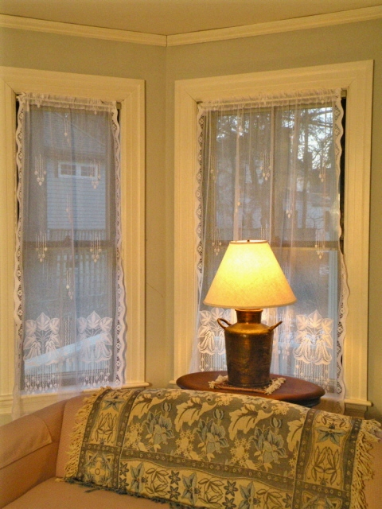

Meadow Lily marks its design centennial in 2010. Meadow Lily is especially well suited for American bungalows and early 20th century homes and apartments and works beautifully for any style of home where a clean, light lace pattern is desired. Our 8 point lace quality handsomely captures the conventionalized pattern of lilies and stamen. A low border has clusters of flowers (24" high) that enhance privacy and an open weave of the top of the panel that forms a transparent scrim.
The original panel was advertised in the 1910-11 catalog of the Come-Pact Furniture Company of Ann Arbor, Michigan, in the 50" width. Burrows Studio has added a 30" width: the combination is ideal for homes with a variety of wide and narrow windows. A coordinating valance is also offered.
Meadow Lily is the first and foremost panel of the Arts & Crafts revival. Burrows Studio reproduced Meadow Lily in the early 1990s and it has topped our sales in popularity ever since it was introduced for sale. John Burrows, proprietor, has championed the Arts & Crafts Movement throughout his career as a design historian and an historical-design merchant.
The original panel was advertised in the 1910-11 catalog of the Come-Pact Furniture Company of Ann Arbor, Michigan, in the 50" width. Burrows Studio has added a 30" width: the combination is ideal for homes with a variety of wide and narrow windows. A coordinating valance is also offered.
.jpg) |
| Meadow Lily Wide (Gathered) 50" Panel |
Meadow Lily is the first and foremost panel of the Arts & Crafts revival. Burrows Studio reproduced Meadow Lily in the early 1990s and it has topped our sales in popularity ever since it was introduced for sale. John Burrows, proprietor, has championed the Arts & Crafts Movement throughout his career as a design historian and an historical-design merchant.
| Meadow Lily has been a star of the silver screen, appearing in the dining room of Richard Milhous Nixon's childhood home in Whittier, California in Oliver Stone's 'NIXON' (1995, set decoration by Merideth Boswell). |
.jpg) |
| Meadow Lily Wide 50" Panel |
.jpg) |
| Meadow Lily Narrow 30" Panel |
Sizes & Prices
Sold as individual panels.
Sizes show width x length.*
Meadow Lily Curtain
50" x 54" = $70
50" x 60" = $77
50" x 72" = $83
50" x 84" = $88
50" x 90" = $90
50" x 108" = $104
Meadow Lily Narrow
30" x 54" = $54
30" x 60" = $56
30" x 72" = $59
30" x 84" = $65
30" x 90" = $82
Fabric Content: 95% cotton/5% polyester
*All sizes are approximate, with a 3% allowable variance.
There may be additional shrinkage after washing.